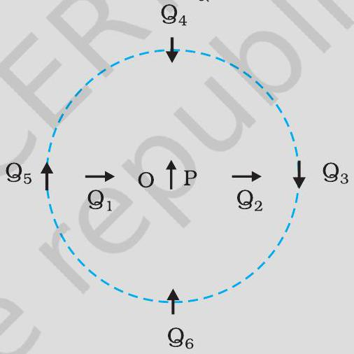
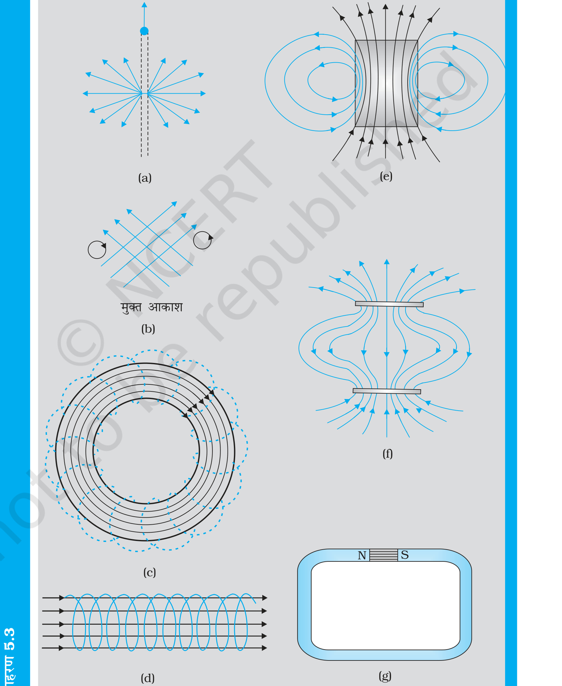
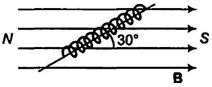
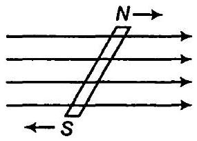
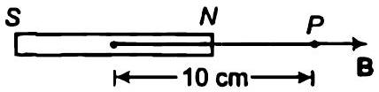
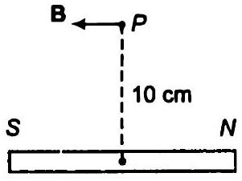

(a) क्या होता है जबकि एक चुंबक को दो खंडों में विभाजित करते हैं (i) इसकी लंबाई के लंबवत (ii) लंबाई के अनुदिश? (b) एकसमान चुंबकीय क्षेत्र में रखी गई किसी चुंबकीय सुई पर बल आघूर्ण तो प्रभावी होता है पर इस पर कोई परिणामी बल नहीं लगता। तथापि, एक छड़ चुंबक के पास रखी लोहे की कील पर बल आघूर्ण के साथ-साथ परिणामी बल भी लगता है। क्यों? (c) क्या प्रत्येक चुंबकीय विन्यास का एक उत्तरी और एक दक्षिणी ध्रुव होना आवश्यक है? एक टोरॉयड के चुंबकीय क्षेत्र के संबंध में इस विषय में अपनी टिप्पणी दीजिए। (d) दो एक जैसी दिखाई पड़ने वाली छड़ें A एवं B दी गई हैं जिनमें कोई एक निश्चित रूप से चुंबकीय है, यह ज्ञात है (पर, कौन सी यह ज्ञात नहीं है)। आप यह कैसे सुनिश्चित करेंगे कि दोनों छड़ें चुंबकित हैं या केवल एक? और यदि केवल एक छड़ चुंबकित है तो यह कैसे पता लगाएँगे कि वह कौन सी है। [आपको छड़ो A एवं B के अतिरिक्त अन्य कोई चीज प्रयोग नहीं करनी है।]
क्या होता है जबकि एक चुंबक को दो खंडों में विभाजित करते हैं (i) इसकी लंबाई के लंबवत (ii) लंबाई के अनुदिश?
एकसमान चुंबकीय क्षेत्र में रखी गई किसी चुंबकीय सुई पर बल आघूर्ण तो प्रभावी होता है पर इस पर कोई परिणामी बल नहीं लगता। तथापि, एक छड़ चुंबक के पास रखी लोहे की कील पर बल आघूर्ण के साथ-साथ परिणामी बल भी लगता है। क्यों?
क्या प्रत्येक चुंबकीय विन्यास का एक उत्तरी और एक दक्षिणी ध्रुव होना आवश्यक है? एक टोरॉयड के चुंबकीय क्षेत्र के संबंध में इस विषय में अपनी टिप्पणी दीजिए।
दो एक जैसी दिखाई पड़ने वाली छड़ें A एवं B दी गई हैं जिनमें कोई एक निश्चित रूप से चुंबकीय है, यह ज्ञात है (पर, कौन सी यह ज्ञात नहीं है)। आप यह कैसे सुनिश्चित करेंगे कि दोनों छड़ें चुंबकित हैं या केवल एक? और यदि केवल एक छड़ चुंबकित है तो यह कैसे पता लगाएँगे कि वह कौन सी है। [आपको छड़ो A एवं B के अतिरिक्त अन्य कोई चीज प्रयोग नहीं करनी है।]
चित्र 5.4 में O बिंदु पर रखी गई एक छोटी चुंबकीय सुई P दिखाई गई है। तीर इसके चुंबकीय आघूर्ण की दिशा दर्शाता है। अन्य तीर, दूसरी समरूप चुंबकीय सुई Q की विभिन्न स्थितियों (एवं चुंबकीय आघूर्ण के दिक्विन्यासों) को प्रदर्शित करते हैं। (a) किस विन्यास में यह निकाय संतुलन में नहीं होगा? (b) किस विन्यास में निकाय (i) स्थायी (ii) अस्थायी संतुलन में होंगे? (c) दिखाए गए सभी विन्यासों में किसमें न्यूनतम स्थितिज ऊर्जा है?

नीचे दिए गए चित्रों में से कई में चुंबकीय क्षेत्र रेखाएँ गलत दर्शायी गई हैं [चित्रों में मोटी रेखाएँ]। पहचानिए कि उनमें गलती क्या है? इनमें से कुछ में वैद्युत क्षेत्र रेखाएँ ठीक-ठीक दर्शायी गई हैं। बताइए, वे कौन से चित्र हैं?

क्या कोई ऐसी प्रणाली है जिसका चुंबकीय आघूर्ण होगा, यद्यपि उसका नेट आवेश शून्य है?
चुंबकीय क्षेत्र रेखाएँ (हर बिंदु पर) वह दिशा बताती हैं जिसमें (उस बिंदु पर रखी) चुंबकीय सुई संकेत करती है। क्या चुंबकीय क्षेत्र रेखाएँ प्रत्येक बिंदु पर गतिमान आवेशित कण पर आरोपित बल रेखाएँ भी हैं?
यदि चुंबकीय एकल ध्रुवों का अस्तित्व होता तो चुंबकत्व संबंधी गाउस का नियम क्या रूप ग्रहण करता?
क्या कोई छड़ चुंबक अपने क्षेत्र की वजह से अपने ऊपर बल आघूर्ण आरोपित करती है? क्या किसी धारावाही तार का एक अवयव उसी तार के दूसरे अवयव पर बल आरोपित करता है।
गतिमान आवेशों के कारण चुंबकीय क्षेत्र उत्पन्न होते हैं। क्या कोई ऐसी प्रणाली है जिसका चुंबकीय आघूर्ण होगा, यद्यपि उसका नेट आवेश शून्य है?
एक परिनालिका के क्रोड में भरे पदार्थ की आपेक्षिक चुंबकशीलता 400 है। परिनालिका के विद्युतीय रूप से पृथक्कृत फेरों में 2A की धारा प्रवाहित हो रही है। यदि इसकी प्रति 1 m लंबाई में फेरों की संख्या 1000 है तो (a) H, (b) M, (c) B एवं (d) चुंबककारी धारा Im की गणना कीजिए।
H की गणना कीजिए।
B की गणना कीजिए।
M की गणना कीजिए।
चुंबककारी धारा Im की गणना कीजिए।
एक छोटा छड़ चुंबक जो एकसमान बाह्य चुंबकीय क्षेत्र 0.25 T के साथ 30° का कोण बनाता है, पर 4.5 × 10⁻² J का बल आघूर्ण लगता है। चुंबक के चुंबकीय आघूर्ण का परिमाण क्या है?
चुंबकीय आघूर्ण m = 0.32 JT⁻¹ वाला एक छोटा छड़ चुंबक, 0.15 T के एकसमान बाह्य चुंबकीय क्षेत्र में रखा है। यदि यह छड़ क्षेत्र के तल में घूमने के लिए स्वतंत्र हो, तो क्षेत्र के किस विन्यास में यह (i) स्थायी संतुलन और (ii) अस्थायी संतुलन में होगा? प्रत्येक स्थिति में चुंबक की स्थितिज ऊर्जा का मान बताइए।
स्थायी संतुलन में होने पर चुंबक की स्थितिज ऊर्जा का मान बताइए।
अस्थायी संतुलन में होने पर चुंबक की स्थितिज ऊर्जा का मान बताइए।
एक परिनालिका में पास-पास लपेटे गए 800 फेरे हैं, तथा इसका अनुप्रस्थ काट का क्षेत्रफल 2.5 × 10⁻⁴ m² है और इसमें 3.0 A धारा प्रवाहित हो रही है। समझाइए कि किस अर्थ में यह परिनालिका एक छड़ चुंबक की तरह व्यवहार करती है? इसके साथ जुड़ा हुआ चुंबकीय आघूर्ण कितना है?
यदि प्रश्न 5.3 में बताई गई परिनालिका ऊर्ध्वाधर दिशा के परितः घूमने के लिए स्वतंत्र हो और इस पर क्षैतिज दिशा में एक 0.25 T का एकसमान चुंबकीय क्षेत्र लगाया जाए, तो इस परिनालिका पर लगने वाले बल आघूर्ण का परिमाण उस समय क्या होगा, जब इसकी अक्ष आरोपित क्षेत्र की दिशा से 30° का कोण बना रही हो?

एक छड़ चुंबक जिसका चुंबकीय आघूर्ण 1.5 JT⁻¹ है, 0.22 T के एक एकसमान चुंबकीय क्षेत्र के अनुदिश रखा है। (a) एक बाह्य बल आघूर्ण कितना कार्य करेगा यदि यह चुंबक को चुंबकीय क्षेत्र के (i) लंबवत (ii) विपरीत दिशा में संरेखित करने के लिए घुमा दे। (b) स्थिति (i) एवं (ii) में चुंबक पर कितना बल आघूर्ण होता है?
एक बाह्य बल आघूर्ण कितना कार्य करेगा यदि यह चुंबक को चुंबकीय क्षेत्र के (i) लंबवत (ii) विपरीत दिशा में संरेखित करने के लिए घुमा दे।
स्थिति (i) एवं (ii) में चुंबक पर कितना बल आघूर्ण होता है?
एक परिनालिका जिसमें पास-पास 2000 फेरे लपेटे गए हैं तथा जिसके अनुप्रस्थ काट का क्षेत्रफल 1.6 × 10⁻⁴ m² है और जिसमें 4.0 A की धारा प्रवाहित हो रही है, इसके केंद्र से इस प्रकार लटकायी गई है कि यह एक क्षैतिज तल में घूम सके।

परिनालिका के चुंबकीय आघूर्ण का मान क्या है?
परिनालिका पर लगने वाला बल एवं बल आघूर्ण क्या है, यदि इस पर, इसकी अक्ष से 30° का कोण बनाता हुआ 7.5 × 10⁻² T का एकसमान क्षैतिज चुंबकीय क्षेत्र लगाया जाए?
किसी छोटे छड़ चुंबक का चुंबकीय आघूर्ण 0.48 JT⁻¹ है। चुंबक के केंद्र से 10 cm की दूरी पर स्थित किसी बिंदु पर इसके चुंबकीय क्षेत्र का परिमाण एवं दिशा बताइए यदि यह बिंदु
चुंबक के केंद्र से 10 cm की दूरी पर स्थित किसी बिंदु पर, यदि यह बिंदु चुंबक के अक्ष पर स्थित हो, तो चुंबकीय क्षेत्र का परिमाण एवं दिशा बताइए।

चुंबक के केंद्र से 10 cm की दूरी पर स्थित किसी बिंदु पर, यदि यह बिंदु चुंबक के अभिलंब समद्विभाजक पर स्थित हो, तो चुंबकीय क्षेत्र का परिमाण एवं दिशा बताइए।
